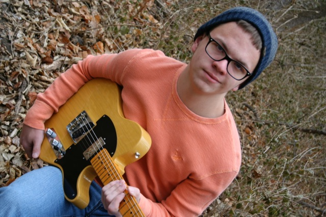
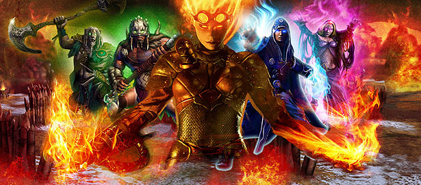
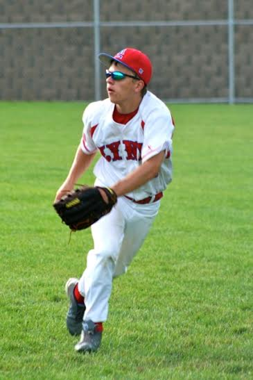
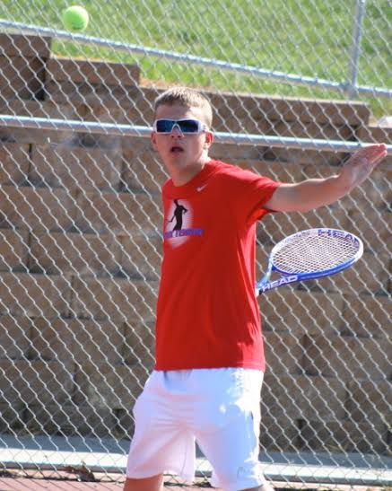

I have played guitar and have been taking lessons since 5th or 6th grade, which would of been 2009 or 2010. In my time playing guitar I have learned many song and riffs, selection of a song, that many believe to be iconic. I love playing guitar and I believe that music of any sort is a great form of expression for anyone. Music can be used to express any feeling or emotion, which in my opinion makes it a very valuable art.
Over my years of playing guitar I have accumulated a collection of guitars. Seven Guitars to be exact. I have 2 acoustic guitars one being a Fender and one a store brand, Lion, Guitar. I also have 5 electric guitars 2 Ibanez brand and 3 Fenders. One of my Fenders is a special edition, 1 of 500, 60 year anniversary Telecaster (shown bellow).

Magic The Gathering or MTG is a card game that is based on a fictional universe that has many mystical and magical creatures, with many realms or planes which are controlled by Planeswalkers. Magic is a game that is based of of skill, for how well you can create a deck, and strategy for how you play the game in general MTG is a game that I played as a kid with my cousin, but has recently became popular with teenagers once again. The game is one that can entertain many people, even though the game may be tough to learn me and many of my friends will tell you the same thing, it's worth it.

I have played baseball for as long as I can remember, whether it was tee-ball fast-pitch or in high school ball. Baseball has been the only sport that I have continued playing, I have quit every other sport that I have played for some amount of time. It is also a sport that my family bonds over, we go to games all over the country whether it is professional or college. A fun fact about me I have been to at least one College World Series game every year since I was born, and even the one before I was born in 1998 since I was born after the 1998 CWS my mother had actually went to a game when she was pregnant with me.
As of right now I am a baseball player for my High School at Abraham Lincoln High School in Council Bluffs Iowa. I am on the roster as of currently on the Junior-Varsity level. I played last season mostly as a pinch runner or courtesy runner for our catcher or pitcher. But technically on the roster I was designated as outfielder. But this next season as well as an outfielder I also plan on going out for Second base, I can't wait to see how it turns out!

Tennis is a sport that I played when I was a little kid. When I was little I went to some tennis camps and I was decent, in my opinion, but I could not serve because I was so short. But in my Sophmore year my Pre-Calculus teacher, also a tennis coach, convinced me and some other people in my class to go out for tennis at my school. Soon after practices started I feel back in love with tennis. My first year in the team I became the number eight player. I was also one of the players who got to compete in the city tournament for my High School.
At the end of the season coach held a junior varsity tournament. I stated of the tournament with a few easy games and then I got some harder games. My third game was the hardest me and my friend Collin went to game 14 to decide who won the set, I won. The final game of the tournament was next I won that game easier than the last. I then became the JV champ. And for the rest of the school year when I saw my coach he called me the JV Champ. This year, Junior year, the head coach told me that I have a very good chance of being the number six player which would be varsity! I cant wait to see how the season goes!

My freshman year I joined speech at my High School. Speech consist of two seasons a group and individual portion, group is first and then individuals. For group I did a radio group with a few of my friends we called it K-ZOMBIE. We made it all the way to All-State, which is the last level. The order goes districts state and then All-State. We were my speech coaches first freshman group to make it to All-State.
For individuals in my Sophmore year I did a story telling on a book called "Enemy Pie". Even though I only made it to state I had a great time with the story My coach even had me go to a retirement with some other people to perform our acts for some elderly, and they loved it! For this year before the season started my coach game me a book that he thought was perfect for me and I think that it will be to and I can't wait to perform it.
For more information please visit the following site www.ihssa.org